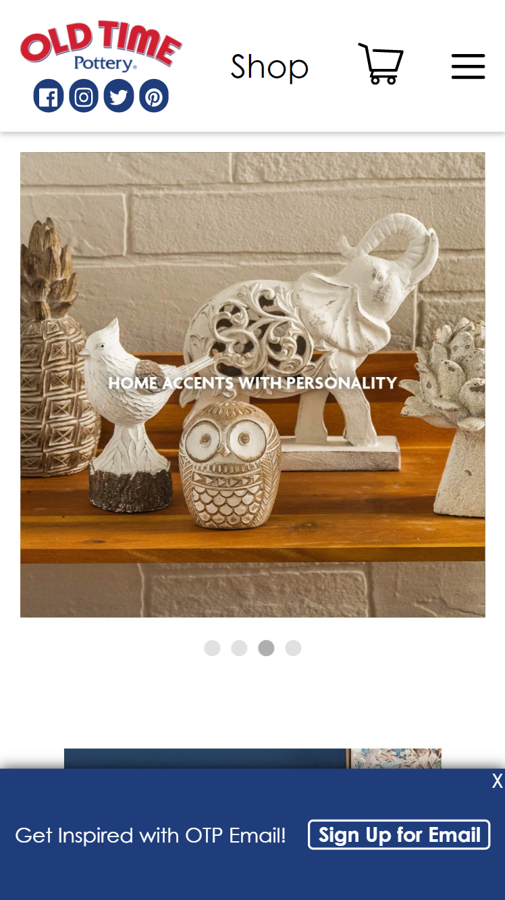

Proximity
Old National
The prnciple of proximity is the practise of placing related items of a page in a visually appealing way and reduce clutter and producing a more organised layout. This is best achieved by placing items related to each other closer while those unrelated are placed further apart. On my image example, the log, menu and other links are in close proximity with each other while the item which is being offered or the product on sale is on its own location, making it outstandiing to users.
Visual Hierrachy
Old Time Poetry

Visual Hierarchy of a display refers to the organisation of the design elements on the page so that eye is guided to see what is of great importance or need to be attended first. This may include sign in buttons or the company's log. On the example of my image, the first out standing features is the form asking for the user to enter their login details in order to use the page.
White Space and Clean Design
Capitec Bank
https://www.capitecbank.co.za/personal/transact/online-banking/
The white space rule is a design practise where the designer ensures that the elements on the page can breath. Accurate use of clean design pleases the user. On my image example, every element is outstanding which l also felt as a pulling factor making users to have a desire of using the page and find out more about what is being offered.